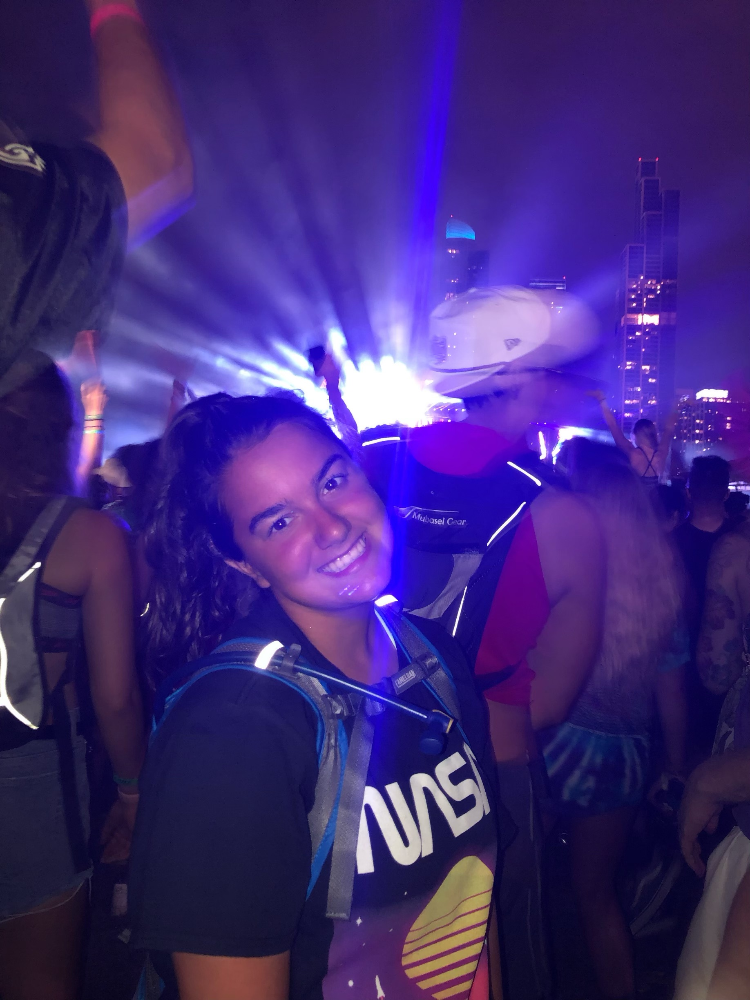

About Me
I am currently a fourth year computer science student at the Illinois Institute of Technology. I was first introduced to coding in middle school and instantly fell in love it. I love spending my free time in a variety of different ways, many of them include: reading, painting/drawing, traveling/going to new places, hanging out with friends and family, solving puzzles, and playing video games. I grew up being a rhythmic gymnast but also did swimming, figure skating, and ballroom/latin dance for a little bit of time. In high school I joined the dance team and dance company.
Current 5 Favorite Songs
- Asteroid - Subtronics & Excision
- Bunker Buster VIP - Subtronics & Excision
- Drowning - Excision (feat. Akylla)
- Titans - Excision & Wooli
- Lost Birds - Zeds Dead (feat. Elliot Moss)
My Favorite Drawing and Paintings That I've Done


Canyon Matka, Skopje, Macedonia

Montego Bay, Jamaica

Riviera Maya, Mexico